A user-defined function is a function that is not a built-in function, a standard function, or a third-party function. A user-defined function is written by a programmer as part of a program. For some students the term "user-defined function" is confusing because the user of a program doesn't define the function. Instead, the programmer define user-defined functions. Perhaps a more correct term is programmer-defined function. Writing user-defined functions has several advantages, including:
To write a user-defined function in Python, simply type code that matches this template:
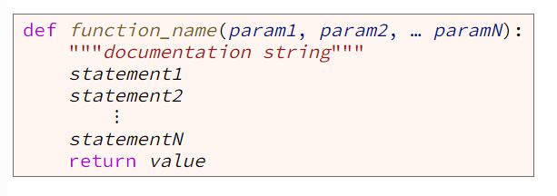The first line of a function is called the header or signature, and it includes the following:
Here is the header for a function named "draw_circle" that takes three parameters named x, y, and radius:
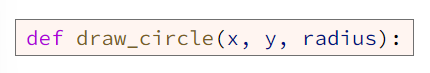You could read the previous line of code as, "Define a function named draw_circle that takes three parameters named x, y, and radius."
The function name must start with a letter or the underscore(_). The rest of the name must be made of letters, digits (0-9), or the underscore. A function name cannot include spaces or other punctuation. A function name should be meaningful and should describe briefly what the function does. Well-named functions often start with a verb.
The statement inside a function are called the body of the function. Just like other block statements in Python, such as if, else, while, and for, all of which end with a colon (:), you must indent the statements inside the body of a function. The body of a function should begin with a documentation string which is a triple quoted string that describes the function's purpose, parameters and return value. The body of a function may contain as many statements as you wish to write inside of it. However, it is a good idea to limit functions to less than 20 lines of code.
Example 1 contains a function named "print_cylinder_volume()" with no parameters that gets two numbers from the user: radius and height and uses those numbers to compute the volume of a right circular cylinder and then prints the colume for the user to see.
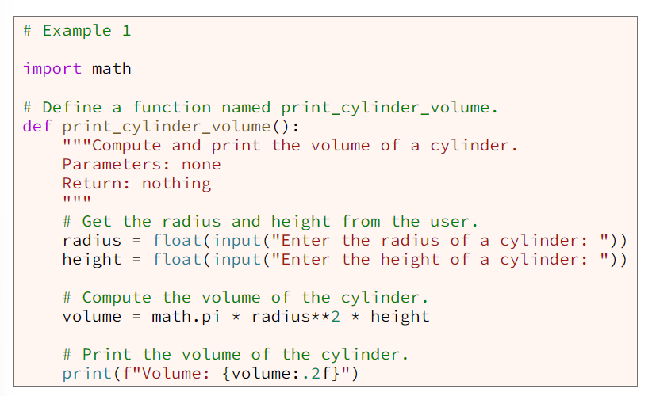Because the "print_cylinder_volume" function in example 1 doesn't accept parameters, it must be called without any arguments like this:
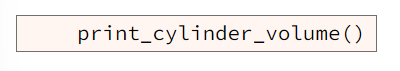Because the "print_cylinder_volume" function in example 1 gets input from a user and prints its result to a terminal window, it can be used only in a program that runs when a user is present. It cannot be used in a program that runs automatically and gets input from a file or the network or a sensor. In other words, the "print_cylinder_volume" in example 1 is not reusable in other programs. The most reusable functions are ones that take parameters, perform calculations, and return a result but do not perform user input and output.
The parameter list in a function's header contains data stored in variables that the function needs to complete its task. A parameter is a variable whose value comes from outside the function. One way to get input into a function is to ask the user for input by calling the built-in Python input function. Another way to get input into a function is through the functions parameters. Getting input through parameters is much more flexible than asking the user for input because the input through parameters can come from the user or a file on a hard drive or the network or a sensor or even another function.
Example 2 contains another version of the "print_cylinder_volume" function. This second version doesn't get the radius and height from the user. Instead, it gets input through its two parameters named radius and height.
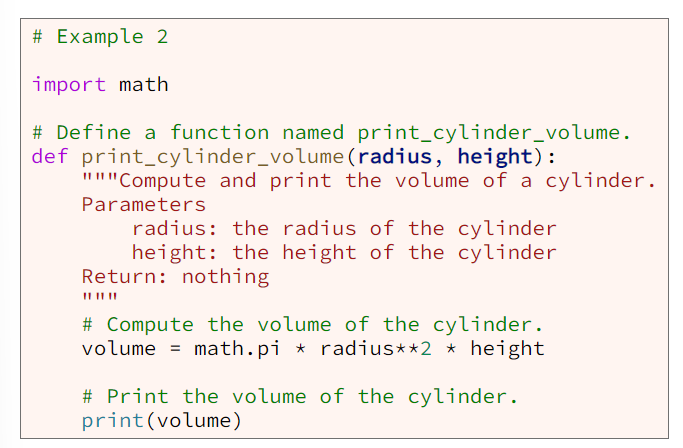Because the second version of the "print_cylinder_volume" function accepts two parameters, it must be called with two arguments like this:
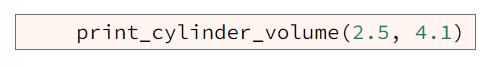To return a result from a function, simply type the keyword "return" followed by whatever result you want returned to the calling function. Example 3 contains a thirds version of the cylinder volume function. Notice that the version in example 3 returns the volume instead of printing it, which makes the function more reusable. Notice also in example 3 that we changed the name of the function from "print_cylinder_volume" to "compute_cylinder_volume" because this version doesn't print the volume but instead returns it.
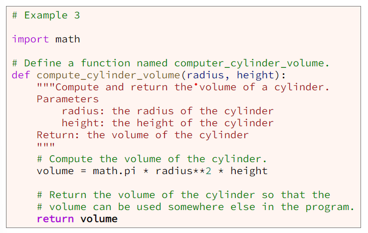Many functions that you've used in the past such as input, float, and round, return a result. When a function returns a result, we usually write code to store that returned result in a variable to use later in the program like this:
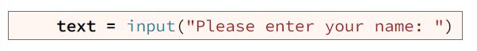Because the "compute_cylinder_volume" function in example 3 accepts two parameters and returns a result, it could be called like this:
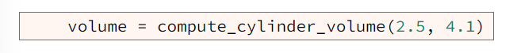In a large program, writing statments outside a function can lead to poor organization. Professional software developers write statements inside a function whenever possible.
Example 5 contains the same Python program as example 4 except most of the statements are inside a user-defined function named main.
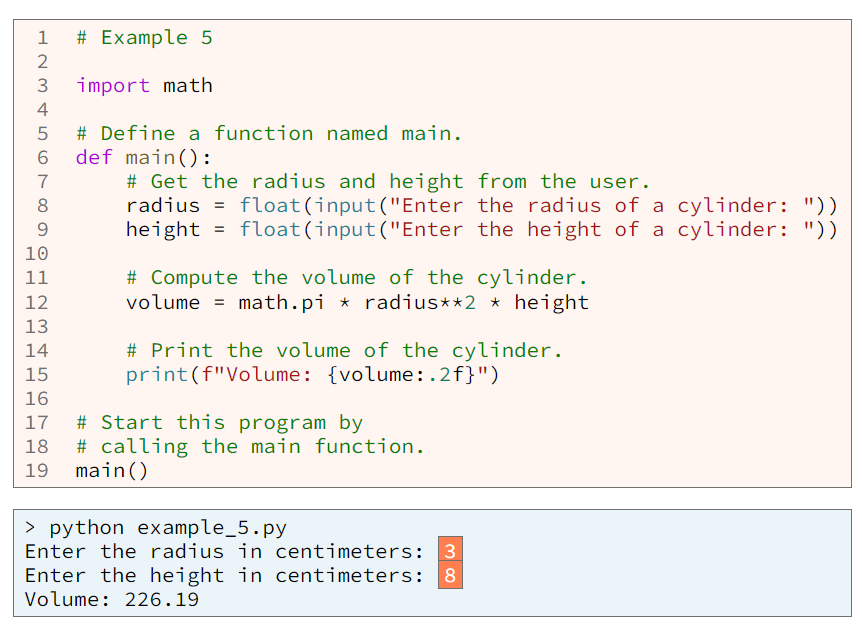Notice the call to the main function in example 5 at line 19. Without that call to the main function, when we run the program, the program will do nothing.
If you look closely at the code in examples 1 and 5, you will realize that both programs have the same problem, namely both the "print_cylinder_volume" function in example 1 and the "main" function in example 5 are not reusable because both of them get input from a user and print to a terminal window. A better way to write the program in examples 1 and 5 is to separate the program into two functions, one named main and one named compute_cylinder_volume as shown in example 6.
Example 6 contains a complete program with two functions, the first named main at line 6 and the second named "compute_cylinder_volume" at line 20. At line 13, the "main" function calls the "compute_cylinder_volume" function. Notice that the compute_cylinder_volume function gets its input through parameters and returns a result which makes this function reusable in other programs, including programs that run automatically without a user.
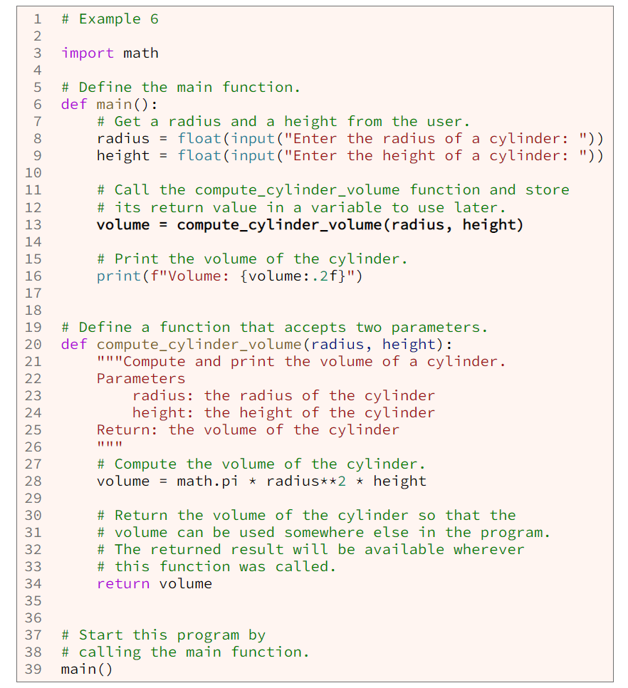 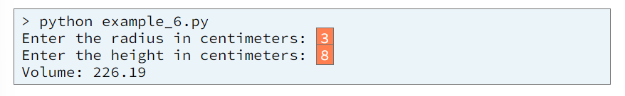The most reusable functions are ones that have parameters, perform calculations, and return a result but do not perform user input and output. In the previous code example, there are two functions named main and computer_cylinder_volume. The main function is certainly useful in the program, but it is not reusable in other programs because it gets user input and prints the result for the user to see. The compute_cylinder_volume function is very reusable in another program because it doesn't get user input or print output. Instead, it takes two parameters, performs a calculation, and returns a result to the calling function. The compute_cylinder_volume function is so reusuable that it could be included in a library of functions that compute the area and volume of 2-D and 3-D geometric shapes.
Some students have trouble visualizing what happens when the computer calls (executes) a function. The following diagram contains the same program as example 6. The circled numbers show the order in which the events happen in the computer. The green numbers and arrows in the diagram show the order in which the computer executes statements in the program. The blue numbers and arrows show how data flows from arguments into parameters and from a returned result to a variable.
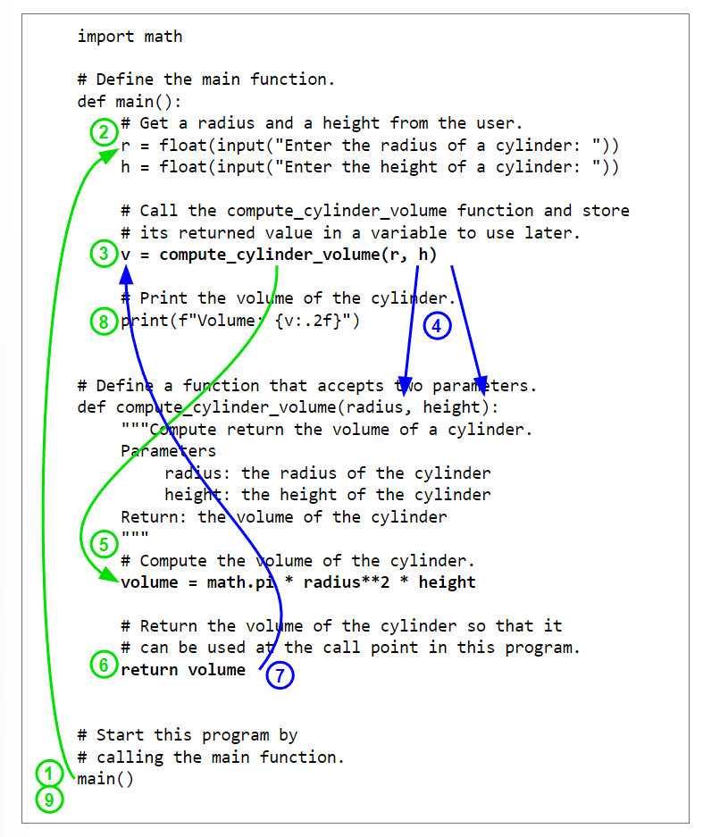A call graph is a diagram shows function calls and returns within a program. A call graph can help you visualize how a program is divided into functions. Within a call graph, the unfilled circle shows where the computer begins executing a program. A rounded rectangle represents a function. A solid arrow represents a call from one function to another function. A dashed arrow represents a value returned from a called function to the calling function.
The call graph below shows the function calls and returns for the program in example 6. From the call graph, we see that the computer begins executing the program by calling the main function. While executing the main function, the computerr calls the input and float functions. Finally the computer calls the compute_cylinder_volume function. Finally the computer calls the print function. In the call graph we can see that the main and print functions don't return a value. The print function prints results for the user to see, but it doesn't return anything.
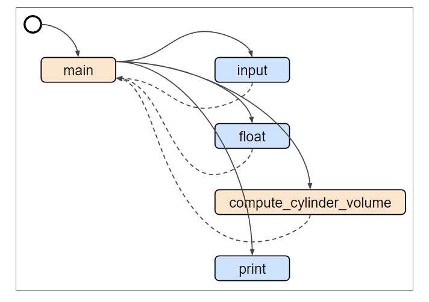